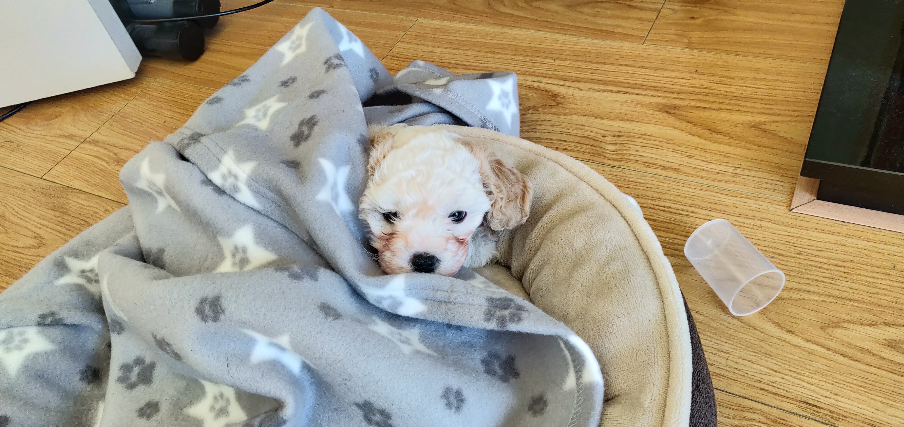
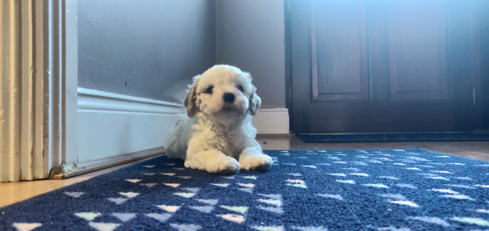

Ryan McLoughlin
Welcome to my website
Welcome to my website
Attended Boyne Community School of Trim.
Completed both Junior and Leaving Certificate exams
Employed as a waiter for the Yamamori group for the previous five years.
To work in a field with computers, this being a field that interests me
Currently attending university, Computer Science TU857
I am skilled in leadership skills. I have lead many group projects in university, all of which have succeeded on schedule.
I have a younger brother and sister, aswell as my mother and father.
I have a dog, named Lucien


I have many hobbies, including designing things to make on a 3d printer, woodworking, metal working, gaming, and designing furniture